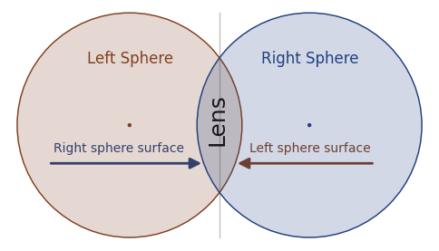

Introduction
OpticalRayTracer is a very portable Java program meant to analyze and model systems of lenses. It accurately models the physics of lenses, including the effect known as dispersion. But perhaps the most remarkable thing about OpticalRayTracer is that it updates and displays complex ray tracing paths in real time, as the user moves virtual lenses around on a virtual optical bench. This allows the user to very quickly learn the behavior of a system of lenses, compare, experiment, and just play.
OpticalRayTracer places its configuration file in a directory it creates, so your settings and choices are preserved. This directory is located at #userdir# on your machine, and it contains a configuration file named "OpticalRayTracer.ini" containing quite a lot of detailed information unique to your use of the program.
I mention this because:
- if you want to analyze or process the results of your work with OpticalRayTracer, the file #userdir#/OpticalRayTracer.ini contains a lot of numeric information in plain-text form, and
- if you have gotten into difficulty and just want to start over, simply delete this file and run OpticalRayTracer again.
This file contains a very detailed snapshot of your last session with OpticalRayTracer, with lens specifications and positions, suitable for exporting into other environments (the same information can be gotten from the copy-configuration button on the Design toolbar). To create this file and its picture of your optical setup, simply exit OpticalRayTracer, navigate to #userdir# and read the file.
First Steps
Since you are reading this, you have successfully installed OpticalRayTracer, and are ready to try some experiments.
When it is first run, the program will automatically create two common lenses for you, a double-convex lens and a double-concave lens. Click the  "Design" tab and you will most likely see these two default lenses. If you do not see any lenses, click the "Erase & Reset" button.
"Design" tab and you will most likely see these two default lenses. If you do not see any lenses, click the "Erase & Reset" button.
Navigation within the ray trace display is as intuitive as I could make it:
- To access a context menu with many functions, press the right mouse button.
- To zoom in and out, use your mouse wheel.
- To pan around the display, just drag the mouse cursor on the display.
- To move a lens from one place to another in the display, while holding the Shift or Ctrl key down click the lens with the mouse cursor and drag it.
- There's more detail on these functions below in "Using the Mouse and Keyboard".
- The display has two dimensions, "x" and "y". "x" is the horizontal dimension, and positive values for x move to the right. "y" is the vertical dimension, and positive values for y move up.
- To move large distances, first zoom out (mouse wheel), then pan (drag mouse cursor), then zoom in again. This saves time compared to clicking and dragging multiple times.
- To determine the position of something in the display, for example the location of a focal point, simply point the mouse cursor at the point of interest and read the mouse x and y position on the status bar (bottom of program window).
The default setup shows four light beams passing from left to right, through two example lenses. The mathematical methods used in this program are efficient enough that (with a moderately fast computer) you can move the lenses around and see how this changes the beam paths -- in real time. Try it -- move the lenses around (hold the Shift or Ctrl key down, click a lens and drag it) and observe the changing beam paths.
Notice that, when you click a lens, the lens changes color and the design control panel below the display becomes active. This panel allows you to change the characteristics of your lenses -- focal length, size, curvature, and many other things. Feel free to experiment with this panel's settings -- see how they change the appearance of the lenses and light beams.
- If you make a change you don't like, simply press the "Undo" button to change back.
- To change the settings for a lens, first click the lens, then use the lens control panel to make the changes you want.
It will help to know a little about optics to understand what you are seeing. If you already know the basics, you can safely skip the next few lines.
The Basics of Lenses
Very basically, a lens is a simple way to bend light beams. Imagine a row of soldiers marching, side by side. To change the direction they're marching, it is necessary to make some of the soldiers slow down temporarily. Now let this picture of marching soldiers help you imagine a light wave, traveling through space. Just as with the soldiers, to make the wave change direction, you have to think of a way to make part of the wave slow down. That is what a lens does -- it selectively slows parts of a light wave.
A convex lens is thicker in the middle than at the edges, and, as it turns out, light takes longer to pass through glass than through air. What this means is that the light that passes through the middle, thickest part of the lens, is slowed down compared to the light that passes through the thinner parts near the edges of the lens. This has the effect of shaping the wavefront that emerges from the lens -- the middle of the emerging wavefront is delayed, and the wave's overall shape is concave, with a depression in the middle. The wavefront has been reshaped to converge on a point some distance away from the lens, and that is exactly what it does.
Such a lens could be used to focus parts of a real-world scene onto a piece of film or an image sensor. The ability of a lens to focus accurately is a central issue in lens design and, as it turns out, the most common kind of lens, with a spherical shape, is actually not a very good design. Its only advantage is that it's easy to make -- everything after that is downhill.
Supported Optical Elements
OpticalRayTracer supports a variety of optical elements:
- Lenses with these curvatures:
- Spherical -- a classic lens, dating back to the time of Galileo, and the most common lens type. Its surface can be thought of as the intersection of two spheres. Indeed, in optical modeling software including OpticalRayTracer, that's exactly the mathematical approach taken -- a double-convex lens is modeled as the intersection of two imaginary spheres that give the lens its shape and characteristics.
- Parabolic -- although most useful in modeling the mirror types supported by OpticalRayTracer, lenses may aso be given a parabolic profile.
- Hyperbolic -- this lens type has become increasingly popular as its ability to overcome spherical aberration becomes more widely understood. Although difficult to manufacture, hyperbolic lenses are far superior to other lens types for ideal focus and other characteristics.
- Planar -- an optically flat plane, used primarily for mirrors and beam absorbers.
- Mirrors. OpticalRayTracer can turn any optical surface into a mirror, so all the above-described curvatures can be applied to a reflecting surface. This is particularly important for telescope design and in the design of certain kinds of solar energy devices.
- Absorbers. These are used to terminate optical paths in a controlled way at a specificed distance. Once absorbed, a light ray appears in OpticalRayTracer's data table for analysis.
OpticalRayTracer will let you play with various kinds of simple, spherical lenses in its virtual playground, but it also includes some mathematical methods that allow you to fashion some rather extraordinarily good lenses called "hyperboloids," famous for their accuracy ... and their difficulty of manufacture. These kinds of lenses are so expensive that it is simpler -- and much less expensive -- to build and test such lenses using a program like OpticalRayTracer than to try to purchase real-world examples. This is an answer to the oft-heard objection to too much gazing at glowing computer screens. We are excused, just this once, by pointing out that building an exotic lens on a computer screen, changing its characteristics, experimenting, would cost thousands of dollars if rendered in glass instead of computer code, and would require months of fabrication time as well.
Mirrors
Recent OpticalRayTracer versions allow the creation of mirrors -- more specifically, lenses that behave like mirrors. The user creates a suitable flat or curved surface and clicks the Design tab's "Reflector" checkbox. This feature allows diverting light beams out of the normal optical path, as well as the creation of concave and convex mirrors, such as are used in astronomical telescopes.
To produce a generic mirror, click the "New mirror/absorber" toolbar button. Now you may change the mirror's characteristics, just as for a lens. Remember that, if it has a curved surface, a mirror can act as a lens. To tilt the mirror in the optical path, choose an appropriate value for the angle entry. By creating two mirrors, one concave reflector as an objective lens and a smaller diagonal mirror, it's possible to build a virtual Newtonian telescope and analyze the beam paths.
If you encouter a case where a mirror won't reflect light, try increasing the mirror's thickness. OpticalRayTracer tries to avoid drawing the same object repeatedly, and it does this by measuring very small distances, and skipping objects that it thinks it may already have drawn. If your mirror is thin enough, OpticalRayTracer may not "see" it. This is true in nature too, but for a different reason.
Absorbers
An absorber is a third kind of supported optical object, and is a variation on mirrors. It's used in cases where the user wants to eliminate one or more rays from the calculation. To create an absorber, just create a mirror as explained above, then select "Absorb" from the Design tab's option checklist. All rays that intersect with an absorber are terminated and play no further part in the optical calculation.
Tutorial

Figure 1: Lens defined by overlapping spheres
I want you to perform your own experiments, but first, here's a simple tutorial to get you started. Using the default lenses automatically created when you run OpticalRayTracer the first time, temporarily drag the concave lens (the lens at the right) out of the optical path (remember: to move a lens, press Shift or Ctrl as you drag your mouse cursor). If you drag the lens a small distance, it will jump back into place, realigning itself with the beam line (ordinarily this automatic feature is a good thing). So drag it a good distance up or down, temporarily removing it from the beam path. Now notice the double-convex lens at the left. If you click this lens, then read its characteristics in the control panel below it, you will discover that it has a "lens radius" of 2 units and a "sphere radius" of 6 units. What do these terms mean?
- "Lens Radius" refers to the vertical distance from the center to the edge of the lens, the overlapping section of Figure 1.
- "Sphere radius" refers to the radius of one of the imaginary spheres from which our lens is composed. Referring to Figure 1 above, imagine two spheres of glass floating in space, overlapping to some extent, then imagine that our lens represents the overlapping part of the spheres.
As it turns out, the mathematics behind lenses relies very much on this idea of overlapping spheres, hyperboloids, and some other useful shapes (as fully explained here). So if you can mentally picture two overlapping spheres as shown in Figure 1, you should be able to predict the result of entering particular numbers into OpticalRayTracer. For example, to create a lens with one side convex and one side flat, you may want to proceed as follows:
- Select the double-convex lens by clicking it.
- Deselect the "symmetrical" check box, which allows you to choose different traits for the left and right-hand sides of your lens.
- Select "Planar" for the left side curvature class.
- You will see that the right-hand side of the lens has become flat, and (because we now have a lens with less overall curvature), the beams travel farther to the right before converging. The lens is said to have a longer focal length.
Left-Right Reversal: At this point, you may wonder why an entry defining the left-hand sphere's radius had its effect on the right hand side of our lens. The answer is that, as explained above, a lens is defined by two overlapping spheres (see Figure 1 above), and the right-hand surface of our lens is defined by a sphere centered to the left of the lens, and vice versa.
Now for something a tiny bit more advanced.
- Select the default convex lens by clicking on it.
- Re-select "Spherical" for the left curvature class and enable "symmetrical" again by clicking its checkbox, restoring our lens to its original state -- a simple, symmetrical double-convex lens.
- Drag the mouse on the display to pan over to the region between x = 4 and 6 (remember that "x" means the horizontal axis), where the beams should now be converging. Once you have centered this part of the display, use the mouse wheel to zoom in a bit for a closer look.
- While looking at the point where the beams converge, select the "Hyperbolic" curvature class from the provided drop-down list (because you selected "symmetrical" above, this entry will affect both sides of our lens). The lens focus should greatly improve.
- A quick reality check -- what constitutes an "improvement" in a lens? Well, ideally, all the beams should converge on a single point, rather than taking slightly different paths as they are doing now.
- Now we are going to fine-tune our lens by entering a custom value for hyperbolic curvature. Type "40" into the left "Hyperbolic Factor" entry window, and press Enter. If you have entered all the right values up to now, this should produce a nearly perfect focus -- all the beams should converge on a single point, located at roughly x = 5.4.
- To discover how accurate this focus is, center the focal point in the display and zoom in on it (use your mouse wheel). Eventually you will get to a point where you can see some small imperfections in the focus. (This will become visible at a zoom factor of about 5.)
- At this point you can fine-tune the lens' properties by carefully adjusting its hyperbolic curvature factor, which has an optimum near the value of 39. One way to make this adjustment is to position your mouse cursor over the hyperbolic curvature entry window and spinning the mouse wheel.
Hyperbolic-curvature lenses are an example of advanced optics and were once very difficult to manufacture. As computers come to play a greater role in optical manufacturing, these high-performance lenses should become more common.
Lens Control Panel
Play with some of the settings in the lens control panel (the panel located on the "Design" tab) to see what effect they have. Notice that you can reposition a lens exactly by entering its x and y coordinates -- this is a way to get around the fact that it is difficult to position a lens precisely using the mouse.
Notice the entry marked "IOR". This means "Index of Refraction," a value representing the ratio of the speed of light through the lens in question to a vacuum (which has an IOR of 1.0). If you set this value to 1.0, the lens will no longer deflect the light beams, because the lens has in essence been redefined as empty space.
Different glasses have different indices of refraction, a property we can take advantage of in advanced lens designs. Here's an example design that displays the effect called dispersion using differently colored light beams.
"Dispersion" is a property of glass in which light beams of different wavelengths travel at different speeds. For example, a blue beam takes longer to move through a lens than a red beam. This causes the two colors (wavelengths) of light to focus at two different places, a trait regarded as a bad thing, called "chromatic aberration."
Dispersion Experiment
This is an optional digression for the curious. To set up for this experiment:
- Delete any existing lenses.
- Switch to the "Configuration" panel and enter "0" for "Snap-To-Grid Value" and "4" for "Light Beam Count".
- Create a lens with these settings (or you can copy its definition from this page -- see below):
- Symmetrical: selected.
- Lens Radius: 2.0
- Left Sphere Radius: 5.0
- Right Sphere Radius: 5.0
- Edge Thickness: 0
- Center Thickness: 0.8348
- Index of Refraction: 1.52
- Dispersion (Abbe number): 59
- X position: 0.0
- Y position: 0.0
- Click here ("Crown" lens) to copy this lens definition onto the clipboard, then paste it into the experimental setup using the display context (right-click) menu (use "Paste: defined position").
- Now return to the ray trace display to see the effect.
- If all your settings are correct, and if the lens has really been positioned at x = 0, y = 0, the two beams should converge at about x = 3.7.
Now we'll add a dispersion calculation.
- Go to the "Configuration" panel and enter "8" for "Dispersion beam count."
When you return to the ray trace display, you should see an array of colored beams near the lens focal point. In this mode, OpticalRayTracer creates colored beams, each of which has an associated wavelength. During the calculation of the ray paths, the lens dispersion property is taken into account and, just as in the real world, the lens cannot focus all these wavelengths onto a single point.
- Moving right along, create a second lens (or copy its definition from this page -- see below) with these properties:
- Symmetrical: deselected.
- Lens Radius: 2.0
- Left Sphere Radius: (planar)
- Right Sphere radius: -5
- Edge Thickness: 0.6
- Center Thickness: 0.1828
- Index of Refraction: 1.72
- Dispersion (Abbe number): 29
- X position: 0.3810
- Y position: 0.0
- Click here ("Flint" lens) to copy this lens definition onto the clipboard, then paste it into the experimental setup using the display context (right-click) menu (use "Paste: defined position").
- If all the settings on both lenses are correct and all the other required settings have been made correctly, you will see all the colored beams converge at about x = 14.0, with very little color dispersion.
- It's possible to adjust the spacing between the lenses, which is both very sensitive and critical for the effect being modeled:
- Select the concave lens, the lens at the right, by clicking it -- it will become green.
- Pan over to the focal point (drag your mouse) and zoom in on the point where the beams cross (mouse wheel), choose a high magnification like 10 (readable on the status bar).
- Select the Design tab and click the X Position entry window.
- Now, while holding down the Shift and Alt keyboard keys (to greatly reduce the rate of change), spin your mouse wheel over the X Position window, and notice the effect on the focal point's position and quality.
- This procedure tunes the spacing betweeen the lenses by a very small amount, to optimize the dispersion effect.
- To skip the above step-by-step procedure and configure the above experiment with just one action, click here to copy the complete program state, and paste the result using the main toolbar's "Paste Full Configuration" button (located on the "Design" tab).
This, by the way, is a classic solution to the problem of chromatic aberration, using varieties of glass called "crown" and "flint," with differing properties that are exploited to make the light beams converge.
By changing the spacing between the two lenses, you will quickly see that this setting is very critical to the outcome, which is why in the real world, such pairs of lenses are often glued together or placed in a lens cell with a spacer of some durable material to maintain the required separation.
Using the Mouse and Keyboard
Graphic display
While playing with lens configurations, you may sometimes notice it is difficult to select a particular lens because the lenses are close together and their selection territories overlap. In a case like this, just click the display repeatedly -- the program will cycle through the lenses that could be selected at the location of your click. You also have the option of cycling among the objects by clicking the  "Cycle through" toolbar button.
"Cycle through" toolbar button.
The graphic display pays attention to the mouse's various buttons and wheel, plus certain keyboard keys. Here's a list of mouse-related inputs and actions:
|
Action
|
Result
|
|
Right-click
|
Access the OpticalRayTracer context menu (many functions)
|
|
Click once
|
Select an object near the mouse cursor
|
|
Click more than once
|
Cycle through objects near mouse cursor
|
|
Double-click
|
List properties of nearest line
|
|
Drag mouse
|
Pan display
|
|
Drag mouse with Shift or Ctrl keys
|
Move selected object
|
|
Mouse wheel
|
Zoom display
|
|
Mouse wheel with Shift key
|
Rotate selected object
|
|
Mouse wheel with Ctrl key
|
Resize selected object
|
|
Most of the above actions with Alt key
|
Slower change
|
Here is a list of keyboard-related inputs and actions:
|
Action
|
Result
|
|
Tab
|
Move forward through all program controls
|
|
Shift|Tab
|
Move in reverse through all program controls
|
|
Alt-D
|
Design tab
|
|
Alt-C
|
Configure tab
|
|
Alt-T
|
Table tab
|
|
Alt-H
|
Help tab
|
|
F1
|
Concise help dialog
|
|
M or context menu key
|
Context [M]enu
|
|
Enter (over object)
|
Select object under cursor
|
|
Enter (outside objects)
|
List properties of nearest line
|
|
L
|
[L]ist properties of nearest line (even inside objects)
|
|
O
|
Cycle through [O]bject selections
|
|
U
|
[U]nselect all objects
|
|
Up/down/left/right Arrow keys
|
Pan display
|
|
Ctrl|Arrow or Shift|Arrow keys
|
Move selected object
|
|
+/- or Home/End
|
Zoom display in/out
|
|
Ctrl|(+/-) or Ctrl|(Home/End)
|
Resize selected object
|
|
Shift|(+/-) orShift|(Home/End)
|
Rotate selected object
|
|
Most of the above actions with Alt key
|
Slower change
|
Text Entry Fields
Virtually all OpticalRayTracer's text entry fields can be changed by placing the mouse cursor over them and spinning the mouse wheel. If the rate of change is too fast, hold down the shift key while spinning the mouse. If that rate is also too fast, hold down the shift and Alt keys together while spinning the mouse.
These actions can be gotten with some special keyboard keys also -- the up and down arrow keys will change the value by +1 and -1 respectively, with smaller changes if the shift and/or Alt keys are held down, just as with the mouse wheel example above. Here is a full list of these special controls:
|
Action
|
Result
|
|
Mouse wheel
|
Value increased/decreased by 1
|
|
up/down arrow keys
|
Value increased/decreased by 1
|
|
Page Up/Page Down keys
|
Value increased/decreased by 10
|
|
Home/End keys
|
Value increased/decreased by 100
|
|
Esc key
|
Change sign (+-) of associated entry
|
The text-field mouse-wheel and keyboard actions listed above can be modified by these accompanying keystrokes:
|
Action
|
Result
|
|
Wheel/keyboard with Shift key
|
Amount of change divided by 10
|
|
Wheel/keyboard with Alt key
|
Amount of change divided by 100
|
|
Wheel/keyboard with both Shift and Alt keys
|
Amount of change divided by 1000
|
Importing and Exporting Data
OpticalRayTracer has a number of methods for writing and reading data to/from the world at large, primarily by way of the system clipboard.
- To create a copy of the specifications for a lens you've designed, simply click the lens, press the right mouse button and choose "Copy".
- To paste that lens somewhere else, move the mouse cursor to the desired destination point, press the right mouse button and select "Paste: mouse cursor."
- You can save lens descriptions in other locations, or even paste them into an e-mail for a friend, by pasting the lens description from the system clipboard. You can also make a copy of the entire experimental setup -- lenses, colors, zoom levels, everything -- by clicking the "Copy" button on the main toolbar below the graphic display (not the context-menu copy button). This places a full description of OpticalRayTracer's present state -- all the lenses and mirrors, plus program settings -- onto the system clipboard. This exact state can be reëstablished by pasting such a description using the toolbar "Paste" button. This means you can send a full, exact description of your experimental setup to a friend, including lenses, zoom settings, everything. Or you can save your experiments for later use by pasting them into a plain-text file for safekeeping.
- To make a graphic copy of the workspace display, click the "Copy Workspace" toolbar button, then open a graphic image editor and choose "Paste".
To create a plain-text table of all the generated lines and place it on the system clipboard, click the "Copy Table" toolbar button. The generated table can be easily imported into databases and spreadsheets. Note also that you can get information about individual lines by double-clicking the display near the line of interest. You can also use the line properties option on the context menu.
Here's an example of an exported data table generated for a simple Newtonian reflector with three components -- a primary mirror, a diagonal reflector, and an eyepiece lens, all named for clarity:
| From | To | Source | Destination | DestinationType | FromX | FromY | ToX | ToY | DeltaX | DeltaY | Magnitude | BeamAngle | SurfaceNormalAngle | WavelengthNM |
|---|
| Beam Origin | Reflection | Origin Ray 1 | Primary Mirror | Mirror | -30.0000 | -1.8000 | 7.7244 | -1.8000 | 37.7244 | 2.2204e-16 | 37.7244 | 3.3724e-16 | 173.4166 | 589.3000 |
| Reflection | Reflection | Primary Mirror | Diagonal Mirror | Mirror | 7.7244 | -1.8000 | 1.2962 | -0.2962 | -6.4282 | 1.5038 | 6.6017 | 166.8332 | -315.0002 | 589.3000 |
| Reflection | Refraction | Diagonal Mirror | Eyepiece Lens | Lens | 1.2962 | -0.2962 | 0.6519 | 2.4582 | -0.6443 | 2.7544 | 2.8288 | 103.1664 | -102.5668 | 589.3000 |
| Refraction | Refraction | Eyepiece Lens | Eyepiece Lens | Lens | 0.6519 | 2.4582 | 0.6461 | 2.5405 | -0.0058 | 0.0823 | 0.0825 | 94.0306 | -77.2203 | 589.3000 |
| Refraction | Termination | Eyepiece Lens | Virtual space boundary | Domain Limit | 0.6461 | 2.5405 | 1.6467 | 100.0000 | 1.0006 | 97.4595 | 97.4646 | 89.4118 | 0.0000e+00 | 589.3000 |
System Considerations
Remember that OpticalRayTracer is a Java application, which means it needs a current Java runtime engine. If the behavior of your copy of OpticalRayTracer doesn't correspond with the description provided here, it probably means your installed version of Java is not up-to-date. To remedy this, visit http://java.com to update your Java installation (Java is free).
Remember also that the total number of beams traced is equal to the number of tracing beams (selected in the "Configuration" panel) multiplied by the number of dispersion beams, e. g. there is a dispersion beam for each chosen wavelength, times each tracing beam. So if the display slows down, this could easily be the reason -- too many beams selected. To prevent calculation of dispersion, simply set "Dispersion Beam Count" to zero.
Algorithm Description
(For a more complete presentation of this topic, visit the OpticalRayTracer technical discussion page.)
OpticalRayTracer first calculates the location of any intersections between tracing beams and spheres or hyperboloids (our lenses). The collision detection mathematics is rather involved and won't be described in any detail here.
Having acquired a list of all possible points of collision for a particular beam, OpticalRayTracer sorts the list of results along the current direction, then determines which intersection is closest along the beam's path.
At this point OpticalRayTracer has determined a point of collision between a tracing ray and a lens or mirror. The ray and the lens collision point each have a characteristic angle, which is used in the next computation.
Snell's Law
"Snell's Law" is a classic optical relationship that, given arguments for incidence angle between two media and indices of refraction for the two media, determines the deflection angle. Expressed in classic form, Snell's Law is:
n1 sin(a1) = n2 sin(a2)
Where:
- n1 = index of refraction of medium 1
- a1 = angle within medium 1
- n2 = index of refraction of medium 2
- a2 = angle within medium 2
The astute reader will notice that, in passing from a medium like air with an IOR near 1.0, to a lens with an IOR of 1.5 for example, the light beam's angle with repect to the surface normal must decrease. And conversely, a beam emerging from glass to air will show an increase in its angle of deflection. It can also be seen that an incident relative angle of zero will not be deflected -- it will remain zero.
In computing refraction, OpticalRayTracer uses this restatement of the classic Snell's Law equation:
a2 = sin-1(sin(a1) n1 / n2)
Here's a practical example:
- Medium 1: air
- Medium 2: crown spectacle glass
- n2 = 1.52
- a2 = sin-1(sin(a1) n1 / n2) = 13.00365 degrees
The above example (in which n1 < n2) causes the beam to deflect toward the normal line (the line perpendicular to the optical surface). In the reverse case (n1 > n2), the ray is deflected away from the normal line. In some cases this may exceed a "critical angle" such that the beam is deflected back into the refracting medium. This is called "total internal reflection", and in such a case OpticalRayTracer imitates nature by reflecting the beam back into the medium using a classic mirror equation. This design choice increases the correspondence between OpticalRayTracer's virtual world and reality.
Note: OpticalRayTracer provides very reliable Snell's Law results, as accurate as the entered lens measurements. The values listed in the OpticalRaytracer data table can be relied on for optical analysis purposes within floating-point processing accuracy limitations.
Dispersion Computation
The computation for dispersion follows along similar lines, but this task is less open to analysis from physically simple principles. My empirical dispersion equation changes the index of refraction based on the wavelength of the light beam:
ior' = ior + ((dp - w) 5x105) / (abbe dp w2)
Where:
- ior' = effective index of refraction at wavelength w
- ior = default index of refraction for the medium.
- dp = dispersion pivot wavelength, set to 589.3 nm, the sodium yellow line.
- w = wavelength of the tracing beam in nanometers.
- abbe = Abbe's Number, a value published for many glasses that describes its dispersion property. Lower Abbe's numbers result in higher dispersion.
Abbe's Number is arrived at in this way:
abbe = (nd-1)/(nf-nc)
Where:
- nf = a medium's index of refraction at the 486.1 nm hydrogen blue line.
- nd = a medium's index of refraction at the 589.3 nm sodium yellow line.
- nc = a medium's index of refraction at the 656.3 nm hydrogen red line.
Abbe numbers for various media are arrived at empirically in laboratory experiments. My equation reverses the relationship between the number and its effects, giving a dispersion-modified IOR with an accuracy of about 5% for many common glasses.
Note: OpticalRayTracer provides approximate dispersion results, suitable for graphic display purposes but not precise (as explained here). If very accurate results are required, a formal calculation is recommended.
Design Options
Here is a list of the Design tab options and their meanings.
- The Name field acceps a custom name for each optical component. A default name is provided, but for complex optical setups, this feature is a nice way to keep track of components. Also, when a table of tracing data is exported, the names are included to help clarify what might otherwise be a confusing list of numerical data.
- The Symmetrical checkbox specifies that the lens is symmetrical -- the left and right sides are the same. This simplifies configuration for a symmetrical lens becaue only one entry needs to be made for each property.
- The Radius entry specifies the distance between the center of a lens and its edge. This value is sometimes confused with the left and right Sphere Radius entries discussed below. The difference is that the sphere radii specify two imaginary spheres that construct the lens, while this entry specifies the lens size from center to edge.
- The Thickness entry specifies the left-to-right thickness of the main body of the lens, apart from its curvature. This entry allows lenses to have a thickness beyond their optical curvature, and is typical of real-world lenses.
- The X and Y Position entries specify the lens placement in the X (horizontal) and Y (vertical) dimensions. The user can also drag the mouse cursor on the lens image to change these entries.
- There are two entries, left and right, for these values:
- The Sphere Radius entry specifies the radius of one of the two spheres from which this lens is constructed. See the explanation at the OpticalRayTracer Technical Description page.
- The Curvature text entry field accepts an entry for hyperbolic curve:
- Briefly, the curvature factor represents the location of a plane that bisects a unit cone (a hyperbola can be thought of as a conic section).
- A factor entry of zero positions the bisecting plane at the cone's apex, which produces a lens with a triangular profile, essentially a prism.
- Larger factor entries move away from the cone's apex and produce less extreme hyperbolic curvatures, and very large numbers (i.e. 1 x 107) change the curvature from a hyperbola to a figure approximating a parabola.
- For tasks that require hyperbolic curvature, entries from 0 to about 100 represent a range of useful shapes.
- For an approximate parabolic curve, for example to design a telescope mirror, enter a number around 1 x 107, the actual numeric value isn't as important as its size, since mathematically speaking, there's only one parabolic curve. Then adjust the size and focal length of the optical element with the usual controls.
- The next entry option consists of three "radio buttons" that selects one of the available optical surface curvatures for each side of a lens or mirror -- Spherical, Parabolic, and Hyperbolic, details of which are discussed above.
- The IOR checkbox specifies the lens material's index of refraction, which is the ratio of the speed of light in the lens material compared to that in a vacuum.
- The Dispersion entry specifies the amount of dispersion (a wavelength-dependent property) the lens material possesses.
- The Angle entry rotates the lens or mirror in the X/Y plane. This is useful for evaluating the off-axis behavior of a lens, and for setting up complex optical configurations, for example by directing beams using angled mirrors.
- The Active checkbox includes or excludes its associated component in the optical calculation. This is a convenient way to manage complex optical models and interactions -- using this feature one can place multiple components in the same location or path and easily switch between them.
- As explained above, OpticalRayTracer supports three kinds of optical objects: Refractors, Reflectors and Absorbers:
- The Refract option is the default choice for lenses. Rays that intersect with this object will be refracted using the outcome of a Snell's Law calculation.
- The Reflect option turns a lens into a mirror. Light beams reflect from the lens' surfaces instead of passing through. This option makes it possible to create optical designs with mirrors, including curved mirrors such as one finds in modern telescopes.
- The Absorb option causes intersecting rays to be absorbed and terminated. This is a convenient way to create a barrier against certain rays that would interfere with a desired result. As with lenses and mirrors, an absorber can be given any desired size or shape.
Configuration Options
Here is an explanation of the controls in the Configure tab:
- First, the Color button bar:
- To change a color in the Configure tab's selection list, simply click the colored button for the value you want to change (each button has a flyout explanation that appears when you hover the mouse cursor over the button). A color selection dialog will appear.
- OpticalRayTracer supports color transparency, which means if you adjust the "Alpha" setting in the color selection dialog, OpticalRaytracer will honor your choice and make the associated color transparent in proportion (in this context, "Alpha" means transparency). This is useful in a number of situations, for example when light beams overlap and obscure each other -- when the light beams are transparent, it's easier to find a true focal point.
- Light Source Bar Color. This is the color of the vertical line that marks the light beam origin.
- X/Y Zero Baseline Color. This is the color of the reference lines that appear at x = 0 and y = 0 in the ray trace display. If you do not want these lines to appear, set their color to the color of the display background (see "Display Background" below).
- Grid Color. This is the auto-scaling grid in the ray trace display. Again, you can turn this off by setting its color to that of the background.
- Lens color. This color is used to draw the profile and interior of each lens when not selected.
- Tracing Beams Color. This is the beam color used when dispersion is not being computed. Remember that dispersion beams have an internally computed color, appropriate to their wavelength.
- Beam Intersection Color. This is the color of the arrows that mark the intersections between light beams and lens surfaces, where beams change direction by way of refraction.
- Selected Lens Color. A lens changes to this color when it has been selected for editing, either by clicking the lens directly or by way of the cycle lens toolbar button.
- Display High Background Color. This color defaults to white, but in some cases, like trying to make out the color of dispersion beams, another color might be better.
- Display Low Background Color. This color defaults to black, but the user has the option of choosing a different color.
- Intersection Arrow Size. This numeric entry specifies the size of the arrows that mark the destination points of light beams. To remove the arrows from the display, set this value to zero.
- Snap to grid value. This numeric entry sets the threshold for the behavior that returns a lens to the X and Y grid when the mouse is released. This is ordinarily a good thing, a feature, but if you prefer this not to happen, set this number to zero to disable the feature, or choose a different value for special purposes.
- Beam width. This setting adjusts the width of all image lines. An entry of zero is ignored, the minimum beam width is 1.
- Light beam count. This is a setting with a large impact on program performance. OpticalRayTracer's algorithms are swift, but choosing a large number of tracing beams might disable one of its best features: real-time response to user inputs. Also, it is easy to become overloaded with information as the number of beams increases. It is difficult to take advantage of the information presented by more than about 8 tracing beams. Lots of beams can be entertaining, though.
- Source Y start and end. These values determine the vertical limits for the array of tracing beams. These two numbers are typically set to fall within the chosen radius of your lenses. The default settings of -1.8 and 1.8 means all the beams fall comfortably within the default lens radius of 2 units (remember that a lens diameter is twice its radius).
- Maximum interactions. This determines the limit to interactions for a given beam, to avoid the computation of pointless internal reflections within a lens, for example. The default value is quite large, but a sufficiently complex lens system might require that it be increased.
- X Source plane. This is the location in the x dimension from which the tracing beams emanate. In the ray trace display, zoom out to see the location of the beam origin, then change this number to see what happens.
- X beam rotation plane. This is the plane in the x dimension that represents the pivot point for beam rotation. If an entry is made for beam offset angle below, this will be the plane around which the beams will rotate. The default is zero, and for a specific off-axis lens test, the user has the option of moving the lens to this location, changing this defined plane to be that of the lens, or rotating the lens instead of the beams.
- Beam offset angle. This setting is used to tilt the array of tracing beams, a way to test the off-axis performance of a lens without having to rotate the lens itself. By controlling the source angle you can observe the resulting path through a series of lenses, thus determining the off-axis performance for the entire system.
- Dispersion beam count. This setting produces a set of dispersion beams, with appropriate colors and wavelengths, for each tracing beam. These dispersion beams will be deflected by different amounts depending on specific lens settings, in particular the dispersion value. This is the key to the dispersion effect simulation.
- Interlens epsilon. This setting creates a threshold to distinguish between optical surfaces. If during calculation two surfaces are found to be separated by a small distance, OpticalRayTracer may assume the source and destination are the same surface -- and that may be true. To prevent this from happening, increase this setting. Most OpticalRayTracer numerical entries are large, but this one is normally very small, such that scientific notation is normally used, for example an entry of 1e-7 (which means 1 times 10-7). In most cases this setting's default value shouldn't need to be changed.
- Surface epsilon. This value creates an acceptance boundary around optical surfaces so the ray tracer can identify and interact with them. If a light ray skips over a legitimate object instead of interacting with it, increase this value. If light rays seem to be interacting with the empty space near lenses, decrease this value. For lenses with normal dimensions (i.e. ≤ 10 units), this setting's default value shouldn't need to be changed.
- Virtual space box size. This is an outer limit size for the OpticalRayTracer virtual space. This value prevents anomalous behavior that can result from overly large computation values in the absence of limits.
- Diverging Beams. This checkbox causes the tracing beams to originate in and diverge from a point source located at the X source reference plane, rather than being generated in parallel at that plane.
Remember that all the above values are reset by the Erase & Reset button. If you make settings that cause problems, simply reset the program to its default values.
Remember also that the total number of ray trace computations is equal to the number of tracing beams multiplied by the number of dispersion beams, such that choosing 8 tracing beams and 8 dispersion beams results in 64 traces, fine for a fast computer, but not so great for a slower machine. To prevent the generation of dispersion beams and their associated computation overhead, set this value to zero.
All the configuration values, along with a full description of the lenses you create, are preserved between sessions in a file located at #userdir#/OpticalRayTracer.ini on this system, and the same information can be copied onto the system clipboard with the toolbar "Copy Configuration" button.
Command-line Interface
To facilitate design automation and testing procedures, OpticalRayTracer accepts a small number of command-line arguments:
- -r : Read a full OpticalRayTracer configuration from standard input.
- -t : Emit a tab-separated-value table to standard output.
- -h : Emit an HTML-formatted table to standard output.
- -q : Quit OpticalRayTracer.
This is an advanced feature that most OpticalRayTracer users won't need. Here is an example that passes command-line arguments and streams to OpticalRayTracer from a shell session:
$ java -jar OpticalRayTracer.jar -r -t -q < test_configuration.txt > output_table.txt
The above example causes OpticalRayTracer to (-r) read a user-defined test configuration from the standard input stream, (-t) emit a tab-separated-value table to the standard output stream, and (-q) quit. The user's command-line parameters provide the content of a configuration file and saves the resulting table in another file.
An example use might be to repeatedly change one or more optical configuration parameters in a user-defined configuration file (which must be a complete configuration such as may be acquired from the OpticalRayTracer "Copy full configuration" button on the Design tab), then produce a table of results for analysis of the changes.
Unfortunately, this feature isn't particularly fast. Because OpticalRayTracer is a Java program it must load the Java virtual machine before it can run, also some commands may require the graphical user interface to be displayed, consequently each invocation of an example like the above may require two or more seconds to run, even though (for this example) the program quits immediately after generating the table.
Common Problems
- When designing systems of lenses, be sure that your lenses do not overlap, that one lens is not located within another, and that the light source is not located within a lens. In short, the light source must be separate from the lenses, and the lenses must be separate from each other.
- Users may notice that the left-hand lens radius entry affects the right-hand side of the lens, and vice versa. This is as intended, and is explained here.
- If light beams pass through lens surfaces without any interaction, this may result from a Surface Epsilon value (on the Configure tab) that is too small for the scale of the lenses -- try increasing the value.
- The "Center Thickness" value displayed on the Design tab is a computed result, it's not a user entry -- it's defined by an optical element's curvature class, edge thickness, element radius and sphere radius.
- There is a great deal of excellent, detailed information about optics on the Web, both theoretical and practical. Google for "optics," "ray tracing" and related topics.
Conclusion
The OpticalRayTracer Home Page is located at http://www.arachnoid.com/OpticalRayTracer, where additional documentation and other resources are located. Be sure to visit to make sure you have the latest version of OpticalRayTracer.
User support
Click here for a more detailed technical description of OpticalRayTracer and optical mathematics in general.
Because OpticalRayTracer is released under the GPL (but please visit Careware anyway), there is no user support. This help file plus the sort of knowledge available in optical textbooks and online should be sufficient to help the user make it productive.
If you detect a bug in OpticalRayTracer, please report it at arachnoid.com Messages.